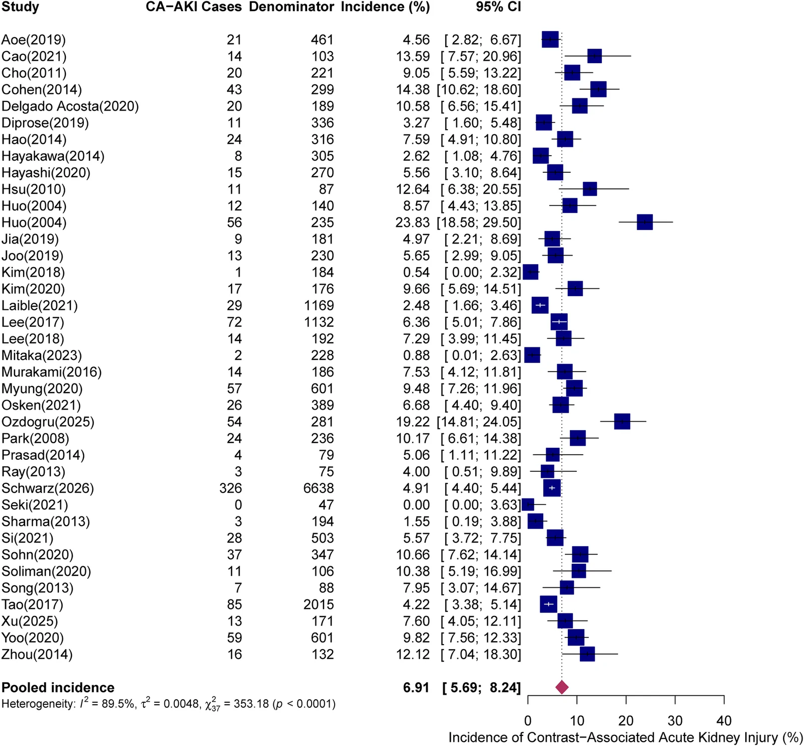
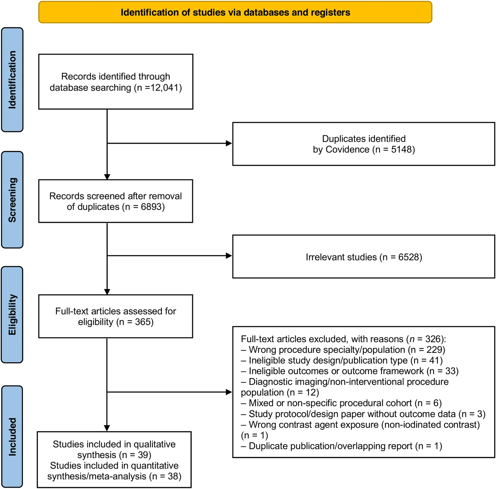

IR Weekly Literature Digest · Full-text analysis
Incidence, risk factors, and outcomes of contrast-associated acute kidney injury following interventional radiology procedures: a systematic review and meta-analysis.
Front Radiol. 2026 Sep 23;6:1947256. doi: 10.3389/fradi.2026.1947256
Read the original articlePubMedOverview
This PROSPERO-registered systematic review and meta-analysis pooled observational data on contrast-associated acute kidney injury (CA-AKI) after catheter-based non-coronary endovascular and interventional radiology procedures. Thirty-nine studies were included qualitatively and 38 contributed to the pooled incidence. The pooled CA-AKI incidence was 6.91% (95% CI 5.69-8.24) with I2 = 89.5%. Incidence was higher in embolization/interventional oncology (8.44%) than in neuroendovascular/carotid procedures (5.48%; p = 0.0171). Risk factors and outcomes were synthesised only narratively. GRADE certainty was very low. The pooled figure is best read as a descriptive benchmark, not a predictive estimate.
Study design
Systematic review and meta-analysis following PRISMA 2020, with an a priori protocol registered in PROSPERO (CRD420261385592). PubMed/MEDLINE, Embase, Scopus, CINAHL and Web of Science were searched from inception to 30 April 2026. The search found 12,041 records; 5,148 duplicates were removed and 6,893 were screened. Of 365 full texts assessed, 326 were excluded, leaving 39 studies (published 2004-2026) in the qualitative synthesis and 38 in the meta-analysis. Two reviewers screened independently, using Covidence. Study quality was assessed with the Newcastle-Ottawa Scale. The Cochrane RoB 2 tool was prespecified for randomised trials, but no RCTs were eligible. Incidence proportions were pooled with a random-effects model after Freeman-Tukey double arcsine transformation, in R 4.1.0 with the meta package. Heterogeneity was assessed with I2. The authors ran leave-one-out, patient-level-only, cohort-overlap and definition-based sensitivity analyses. They also ran subgroup analyses and a funnel plot with Egger's test. Certainty was graded with GRADE. Risk factors and clinical outcomes were not pooled because of heterogeneity.
Patients
Included studies enrolled adults undergoing fluoroscopy-guided, catheter-based non-coronary endovascular or IR procedures with iodinated contrast. Examples were TACE, hepatic and bronchial artery embolization, postpartum haemorrhage TAE, neuroendovascular thrombectomy and coiling, carotid stenting, and cerebral angiography. Studies had to report a discrete AKI, CIN or CA-AKI event count and denominator. Excluded were coronary or interventional cardiology cohorts, purely diagnostic angiography, case series of fewer than 5 patients, non-English papers, and studies reporting only continuous creatinine trajectories (one study, ref 24). No paediatric study qualified. Most studies came from East Asia (Japan, South Korea, China, Taiwan). All were observational. Several neurovascular cohorts combined intravenous CTA/CTP contrast with intra-arterial contrast, so the route could not be separated. Several studies excluded severe renal impairment or dialysis. Denominators were patients, procedures or sessions depending on the study. The sensitivity analysis restricted to patient-level data included 30 studies and 16,825 unique patients. The largest cohort was Schwarz 2026 (n = 6,638, EVT).
Intervention and comparator
There was no intervention or comparator. The exposure was iodinated contrast during IR or endovascular procedures. It was mainly intra-arterial, with low-osmolar, iso-osmolar or mixed agents where reported. Contrast type, hydration and hypotension were inconsistently reported. Prasad reported that all patients received procedural fluids, and Schwarz reported peri-EVT hydration and hypotension. CA-AKI definitions were retained as reported by each study: KDIGO, AKIN, ICA, ESUR, and study-specific or CIN criteria, such as creatinine rise of at least 0.5 mg/dL or at least 25%. One study identified AKI by ICD-9 code. Ascertainment windows ranged from about 24 h to 7 days.
Results
| Primary: pooled CA-AKI incidence (38 studies) | 6.91% (95% CI 5.69-8.24), I2 = 89.5%. Study-level incidence ranged from 0% (emergency TAE for postpartum haemorrhage) to 23.8% (Huo 2004, repeated TACE in HCC). |
|---|---|
| Sensitivity: patient-level estimates only | 30 studies, 16,825 patients: 7.27% (95% CI 5.77-8.92), I2 = 91.5%. |
| Sensitivity: cohort overlap (excluding Huo ref 33 and Hsu ref 34) | 36 studies: 6.77% (95% CI 5.53-8.12), I2 = 89.9%. |
| Sensitivity: excluding Cohen 2014, which had no formal AKI definition | 37 studies: 6.73% (95% CI 5.53-8.03), I2 = 89.0%. |
| Leave-one-out | Pooled estimate ranged from 6.56% to 7.16%. Excluding Schwarz (n = 6,638) gave 6.99% (95% CI 5.60-8.52), I2 = 89.3%. I2 stayed at 87.4-89.8% in every iteration. |
| Subgroup: procedure type | Embolization/interventional oncology (20 studies, n = 5,602): 8.44% (95% CI 6.53-10.56), I2 = 84.4%. Neuroendovascular/carotid (18 studies, n = 13,541): 5.48% (95% CI 4.05-7.09), I2 = 90.5%. Between-group p = 0.0171. |
| Subgroup: baseline renal function | CKD populations (2 studies, n = 287): 5.04% (95% CI 0.00-24.65), I2 = 95.6%. Non-CKD or mixed (36 studies, n = 18,856): 7.04% (95% CI 5.80-8.38), I2 = 89.3%. Difference p = 0.7921, which is underpowered and uninformative. |
| Subgroup: definition of CA-AKI | Standardised criteria (KDIGO/AKIN/ICA/ESUR; 14 studies): 5.67% (95% CI 4.10-7.47), I2 = 85.3%. Study-specific or CIN definitions (24 studies): 7.76% (95% CI 5.89-9.87), I2 = 91.1%. Difference p = 0.1175. |
| Small-study effects | Funnel plot was asymmetric. Egger's test t = 2.35, df = 36, p = 0.0246. The authors did not attribute this specifically to publication bias, given the heterogeneity. |
| Risk of bias and certainty | NOS scores ranged from 3 to 8. Fourteen studies were low risk, 24 moderate and 1 high. GRADE certainty was very low for the overall and procedure-specific estimates. |
| Risk factors (narrative) | Frequently reported: impaired baseline renal function, diabetes, hypertension, anaemia, hypoalbuminaemia, higher contrast volume, advanced liver dysfunction, ascites, repeated TACE, and procedural complexity. Inflammatory markers (NLR, hs-CRP) were reported in neuroendovascular cohorts. No reliable contrast-volume threshold was established. No pooled effect sizes. |
| Outcomes (narrative) | CA-AKI was associated in several, but not all, studies with higher mortality, worse mRS, haemorrhagic transformation, and reduced survival after TACE. Most episodes were mild and transient, but a minority needed renal replacement therapy or had persistent impairment. No pooled estimates were given. |
Key figures

| Study (Author, Year) | Sample size (n) | CA-AKI Cases (n) | Incidence (%) | Definition of CA-AKI | Timing of AKI Assessment |
|---|---|---|---|---|---|
| Aoe (2019) (43) | 461 TACE sessions (260 patients) | 21 | 4.6% | CIN defined as increase in serum creatinine ≥0.5 mg/dL or ≥25% from baseline | 24–72 h after TACE |
| Cao (2021) (42) | 103 patients | 14 | 13.6% | CIN defined as increase in serum creatinine by ≥0.5 mg/dL within 48–72 h after contrast administration | 48–72 h after TACE |
| Cho (2011) (41) | 221 TACE treatment sessions (101 patients) | 20 | 9.0% | RCIN defined as increase in serum creatinine ≥25% from baseline | 48–96 h after TACE |
| Cohen (2014) (40) | 299 patients with available AKI data | 43a | 14.4%a | AKI reported as post-TACE complication; no formal creatinine-based definition reported | Post-TACE follow-up; exact timing not reported |
| Delgado Acosta (2020) (39) | 189 patients | 20 | 10.6% | CIN defined as increase in serum creatinine >25% from baseline or absolute increase ≥0.50 mg/dL after intravascular contrast administration | Typically 48–72 h after contrast exposure during hospitalisation |
| Diprose (2019) (38) | 336 patients | 11 | 3.3% | CA-AKI defined as increase in serum creatinine ≥26.5 µmol/L or ≥1.5 × baseline serum creatinine following contrast exposure | 24–72 h after EVT |
| Hao (2014) (37) | 316 TACE procedures in 166 patients | 24 | 7.6% | AKIN criteria: absolute increase ≥26.4 µmol/L (0.3 mg/dL), ≥50% relative increase in serum creatinine, or requirement for postoperative haemodialysis | Within 72 h after TACE |
| Hayakawa (2014) (36) | 305 TACE sessions in 141 patients | 8 | 2.6% | CIN defined as increase in serum creatinine >0.5 mg/dL or >25% from baseline within 3 days after TACE without alternative cause of AKI | Postoperative day 2–3 |
| Hayashi (2020) (35) | 270 platinum-based TACE/TAI sessions in 129 patients | 15 | 5.6% | ICA cirrhosis-specific AKI criteria: increase in serum creatinine ≥0.3 mg/dL or ≥50% from baseline within 7 days after TACE/TAI | Days 1, 5, and 30 after TACE/TAI |
| Hsu (2010) (34) | 87 HCC patients with ascites undergoing first TACE session | 11 | 12.6% | ARF/CA-AKI defined as increase in serum creatinine ≥50% from baseline or absolute increase ≥0.5 mg/dL to >1.5 mg/dL within 7 days after TACE | Within 7 days after TACE |
| Huo (2004) (33) | 140 TACE treatment sessions in 140 patients | 12 | 8.6% | ARF defined as increase in serum creatinine ≥50% from baseline or absolute increase ≥0.5 mg/dL to >1.5 mg/dL within 7 days after TACE | Days 3, 6, and 9 after TACE |
| Huo (2004) (32) | 235 patients undergoing 843 TACE sessions | 56 | 23.8% | ARF defined as increase in serum creatinine ≥50% from baseline or absolute increase ≥0.5 mg/dL to >1.5 mg/dL within 7 days after TACE | Within 7 days after TACE |
| Jia (2019) (31) | 181 patients with AIS | 9 | 5.0% | AKI defined as ≥25% increase in serum creatinine from baseline at 48 h | 48 h after CTA |
| Joo (2019) (30) | 230 patients with unruptured cerebral aneurysms undergoing elective coiling | 13 | 5.6% | CIN defined as absolute increase in serum creatinine ≥0.5 mg/dL or relative increase ≥25% from baseline serum creatinine value | 48–72 h after contrast exposure |
| Kim (2018) (29) | 184 patients with CKD undergoing neuroendovascular procedures | 1 | 0.5% | CIN defined as absolute increase in serum creatinine ≥0.5 mg/dL or ≥25% rise from baseline after excluding other causes of renal impairment | 48–72 h after contrast exposure |
| Kim (2020) (28) | 176 patients undergoing elective neurointervention procedures | 17 | 9.5% | CIN defined as increase in serum creatinine >0.5 mg/dL or ≥25% from baseline in the absence of an alternative cause | Within 48 h after contrast exposure |
| Laible (2021) (27) | 1,169 patients undergoing EVT for AIS | 29 | 2.5% | PC-AKI defined as increase in serum creatinine ≥0.5 mg/dL or >25% above baseline creatinine value | Within 48 h after admission creatinine measurement |
| Lee (2017) (26) | 1,132 HCC patients undergoing cTACE | 72 | 6.4% | AKI identified using ICD-9-CM diagnostic code 584 during follow-up | During longitudinal follow-up after cTACE |
| Lee (2018) (25) | 192 patients with aSAH undergoing coil embolization | 14 | 7.3% | CI-AKI defined as increase in serum creatinine >25% or >0.5 mg/dL from baseline | Within 72 h after coil embolization |
| Mitaka (2023) (23) | 228 patients undergoing elective neuroendovascular surgery | 2 | 0.9% | Clinical CA-AKI defined using KDIGO criteria: increase in serum creatinine ≥0.3 mg/dL within 48 h, ≥1.5 × baseline serum creatinine, or urine output <0.5 mL/kg/h for 6 h | POD 0–3 after neuroendovascular surgery |
| Murakami (2016) (22) | 186 TACE sessions in 122 patients | 14 | 7.5% | CIN defined as increase in serum creatinine ≥0.5 mg/dL or ≥25% from baseline | 48–72 h after TACE |
| Myung (2020) (20) | 601 patients undergoing sequential CTA and cerebral angiography | 57 | 9.5% | PC-AKI defined as absolute increase in serum creatinine ≥0.5 mg/dL or relative increase ≥25% from baseline | Within 72 h after contrast exposure |
| Ösken (2021) (21) | 389 patients undergoing carotid artery stenting | 26 | 6.6% | CI-AKI defined as increase in serum creatinine ≥0.3 mg/dL or ≥50% from baseline according to AKIN criteria | Within 48–72 h after contrast exposure |
| Ozdogru (2025) (19) | 281 patients undergoing EVT/MT for AIS | 54 | 19.0% | CI-AKI defined as increase in serum creatinine ≥0.5 mg/dL or >25% within 48–72 h after EVT compared with baseline | Serum creatinine assessed at baseline and 48–72 h after EVT |
| Park (2008) (18) | 236 patients undergoing TACE | 24 | 10.2% | AKI defined according to AKIN criteria as absolute increase in serum creatinine ≥0.3 mg/dL or ≥50% from baseline within 48 h after TACE | Within first 48 h after TACE |
| Prasad (2014) (17) | 79 neuroendovascular procedures with contrast media dose ≥250 mL | 4 | 5.0% | CIN defined as increase in serum creatinine ≥50% above baseline or absolute increase ≥0.3 mg/dL at either 24 or 48 h after procedure | 24 and 48 h after neuroendovascular procedure |
| Ray (2013) (16) | 75 patients with SAH undergoing at least one contrast-enhanced imaging study | 3 | 4.0% | CIN defined according to KDIGO criteria as serum creatinine increase >1.5 × baseline or >0.3 mg/dL above baseline, or urine output <0.5 mL/kg/h during one 6-h block | Serum creatinine followed up to 72 h after contrast study |
| Schwarz (2026) (15) | 6,638 patients undergoing EVT for AIS | 326 | 4.9% | CA-AKI defined according to KDIGO criteria as increase in serum creatinine ≥0.3 mg/dL or ≥1.5 × baseline within 48 h after contrast administration | Within 48 h after EVT contrast exposure |
| Seki (2021) (14) | 47 patients undergoing emergency TAE for uncontrollable postpartum haemorrhage | 0 | 0% | PC-AKI defined according to ESUR Guidelines v10.0 as increase in serum creatinine >0.3 mg/dL or >1.5 × baseline within 48–72 h after intravascular contrast administration | Serum creatinine assessed 48–72 h after TAE and before discharge |
| Sharma (2013) (13) | 194 patients undergoing emergency endovascular treatment for AIS | 3 | 1.5% | CIN defined according to AKIN criteria as relative increase in serum creatinine ≥50% above baseline or absolute increase ≥0.3 mg/dL | Within 48 h after endovascular procedure |
| Si (2021) (12) | 503 consecutive TACE sessions in 284 patients with HCC | 28 | 5.6% | CIN defined as increase in serum creatinine ≥0.5 mg/dL (50 µmol/L) or ≥25% from baseline within 48–72 h after intravascular contrast administration in absence of alternative causes | Serum creatinine assessed 48–96 h after TACE |
| Sohn (2020) (11) | 347 HCC patients undergoing TACE | 37 | 11.0% | ICA-AKI criteria: increase in serum creatinine ≥0.3 mg/dL within 48 h or ≥50% increase from baseline within prior 7 days | AKI assessed at 1 day, 2 months, and 4 months after TACE |
| Soliman (2020) (10) | 106 HAE procedures in 84 patients | 11 | 10.3% | CIN defined as 25% increase above baseline serum creatinine or absolute increase ≥0.5 mg/dL within 72 h post-embolization | Within 72 h after hepatic artery embolization |
| Song (2013) (9) | 88 patients undergoing bronchial arteriography or BAE | 7 | 8.0% | CIN defined as increase in serum creatinine >25% from baseline or absolute increase ≥0.5 mg/dL | Between 48 and 96 h after bronchial arteriography or BAE |
| Tao (2017) (8) | 2015 patients with stroke undergoing cerebral angiography ± endovascular therapy | 85 | 4.2% | CI-AKI defined according to ESUR criteria as increase in serum creatinine by ≥44 μmol/L or ≥25% from baseline within 48 h after contrast exposure in absence of alternative etiology | Within 48 h after cerebral angiography |
| Xu (2025) (7) | 171 patients with haemoptysis undergoing sequential CTA and BAE | 13 | 7.6% | CA-AKI defined as increase in serum creatinine ≥26.5 μmol/L or ≥1.5 × baseline serum creatinine after contrast exposure | 24–72 h after BAE |
| Yoo (2020) (6) | 601 patients undergoing EVT for AIS | 59 | 9.8% | AKI defined according to KDIGO criteria as increase in serum creatinine ≥0.3 mg/dL within 48 h or ≥1.5 × baseline serum creatinine within 7 days | Follow-up creatinine assessed from next day to 7 days after EVT |
| Zhou (2014) (5) | 132 patients with HCC undergoing TACE | 16 | 12.1% | AKI defined according to AKIN criteria as increase in serum creatinine ≥0.3 mg/dL or ≥50% from baseline within 48 h after TACE | Serum creatinine assessed within 48 h after TACE |
| Subgroup category | Subgroup | No. of studies | Aggregate denominator (n)a | Pooled incidence (%) | 95% CI | I2 (%) | P-value for subgroup difference |
|---|---|---|---|---|---|---|---|
| Procedure type | Neuroendovascular/carotid procedures | 18 | 13,541 | 5.48 | 4.05–7.09 | 90.5 | 0.0171 |
| Embolization/interventional oncology | 20 | 5,602 | 8.44 | 6.53–10.56 | 84.4 | ||
| Baseline renal function | CKD populations | 2 | 287 | 5.04 | 0.00–24.65 | 95.6 | 0.7921 |
| Non-CKD/mixed renal function populations | 36 | 18,856 | 7.04 | 5.80–8.38 | 89.3 | ||
| Definition of CA-AKI | Standardised criteria (KDIGO/AKIN/ICA/ESUR) | 14 | 9,341 | 5.67 | 4.10–7.47 | 85.3 | 0.1175 |
| Study-specific or CIN-based definitions | 24 | 9,802 | 7.76 | 5.89–9.87 | 91.1 |

Safety
This is a meta-analysis, so no primary safety data were collected. CA-AKI was defined mostly by creatinine thresholds (KDIGO, AKIN, ICA, ESUR, or study-specific CIN criteria). The authors state that most episodes were mild and transient, and a subset needed renal replacement therapy. Myung reported no fatal renal adverse outcomes despite higher PC-AKI incidence in severe baseline renal impairment. Rates of dialysis and persistent renal impairment were not quantified in the main text, because they sit in the supplementary tables and were not pooled.
Strengths
- Prespecified and registered protocol, a comprehensive five-database search, and independent duplicate screening.
- Extensive sensitivity analyses: patient-level only, overlap, no-definition study, leave-one-out, and exclusion of the dominant study. The pooled estimate stayed at 6.56-7.16%.
- Transparent reporting of unit of analysis, definitions and ascertainment windows for each study (Table 2).
- Cautious interpretation of the subgroup, CKD and Egger findings, with a formal GRADE rating and NOS appraisal.
Limitations
- Very high heterogeneity (I2 about 89-92%) persisted in every sensitivity and subgroup analysis. The pooled 6.91% is a descriptive average of dissimilar populations, not an expected risk for any individual patient or procedure.
- Mixed units of analysis: patients, procedures and sessions were pooled together, so repeated observations in the same patient can be counted more than once. The patient-level sensitivity analysis only partly resolves this.
- CA-AKI definitions and windows (24 h to 7 days) varied widely, and one study had no formal creatinine definition. Creatinine-based AKI after IR cannot be attributed to contrast alone. No control group was available, so contrast-specific causality cannot be assessed. Stroke, sepsis, hypotension, liver failure and malignancy are confounders. Intravenous CTA/CTP and intra-arterial contrast were mixed in some neurovascular studies. The authors say creatinine may under-detect injury, as in Mitaka and Prasad, where creatinine fell.
- All studies were observational, with 24 at moderate and 1 at high risk of bias. Selection depended on available post-procedural creatinine, and there was little confounding adjustment. GRADE certainty was very low.
- Risk factors and outcomes (mortality, dialysis, function) were synthesised only narratively, with no pooled effect sizes or adjusted estimates. Claims of association with adverse outcomes are therefore not quantified, and may reflect confounding by illness severity.
- The CKD subgroup had only 2 studies (n = 287) with a CI of 0.00-24.65. Several studies excluded severe renal impairment, so incidence in high-risk patients is probably underestimated. The procedure-type subgroup (p = 0.0171) is study-level and confounded by liver disease, definitions and design, so it is hypothesis-generating. The procedure categories were broad, and the TACE group was dominated by East Asian HCC cohorts. Procedure-level incidence for other IR procedures (for example, peripheral or visceral interventions) is not described.
- Egger's test showed small-study effects (p = 0.0246), and publication bias cannot be excluded. Other limitations: English-only publications; East Asian predominance; no paediatric data; eligibility of mixed cohorts judged without a prespecified threshold; possible residual cohort overlap; hydration, contrast type and hypotension not analysable.
In context
The authors note that most prior work on contrast-associated renal injury comes from coronary angiography and interventional cardiology, and that evidence for non-coronary IR is fragmented. This review offers a benchmark incidence of about 7%. They link the wide variability to differences in populations, procedures, contrast protocols and definitions, and to the shift from CIN toward KDIGO-based CA-AKI. They stress that renal dysfunction after contrast is often multifactorial and cite contemporary evidence that it cannot be attributed to contrast alone. Mitaka (uNGAL) and Prasad (creatinine fell with hydration) suggest creatinine criteria may underestimate neurovascular injury. The authors found that liver disease severity, hypoalbuminaemia and ascites were recurring predictors in TACE cohorts. They found that inflammatory markers and diabetes were recurring predictors in stroke thrombectomy cohorts. They conclude that definitions need standardisation and that prospective multicentre studies are needed.
Implications for practice
Expect roughly 5-9% of patients to develop creatinine-defined AKI after IR procedures, with the highest observed rates in TACE for HCC with advanced liver disease, ascites, hypoalbuminaemia or repeated sessions. Rates were lower after neurothrombectomy and elective neurointerventions, though stroke patients are exposed to other renal insults. Confidence in the pooled number is low. It rests on heterogeneous observational studies with differing definitions, unit-of-analysis mixing and very low GRADE certainty, so quote it as a benchmark, not a risk calculator. In practice, the data support routine risk stratification before IR procedures. Check baseline renal function, diabetes, anaemia, albumin and liver status. Limit contrast volume and unnecessary repeat exposure. Consider renal protection and post-procedure creatinine checks at 48-72 h in high-risk groups, especially TACE patients with decompensated liver disease. The review did not establish a contrast-volume threshold. It gives no evidence on specific preventive strategies, because none were compared. The data do not show that contrast caused the AKI. The authors, citing Myung, emphasise that urgent neurovascular procedures should not be delayed for renal concerns. The linked mortality and functional outcomes are associations that may reflect illness severity, not causal effects. Use procedure-specific and definition-specific figures where available. Standardise reporting with KDIGO in local audits and future IR research.